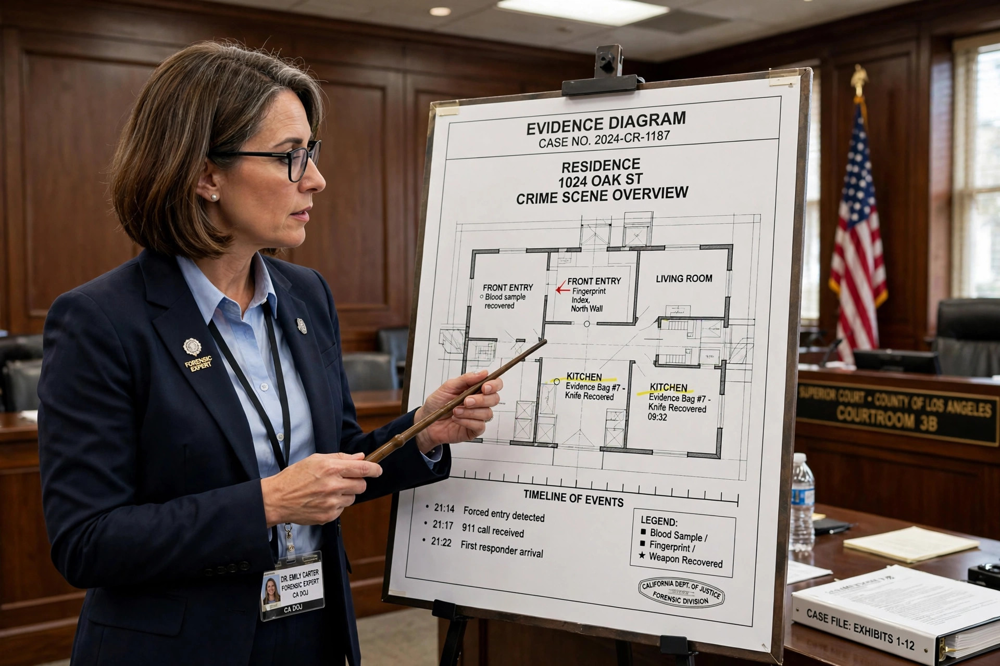

An expert witness, particularly in common law countries such as the United Kingdom, the United States, Canada and Australia, is a person whose level of specialised knowledge or skill in a particular field is deemed sufficient to be accepted by the court as an authority whose evidence and opinions may assist the fact-finder. Expert witnesses are usually called upon to assist in cases involving matters beyond the ordinary knowledge of the court, such as medicine, engineering, forensic science, or finance.

Before an expert may testify, the court must be satisfied that the witness is qualified by knowledge, skill, experience, training, or education. In the United States, the admissibility of expert testimony in federal courts is governed by the standard established in Daubert v. Merrell Dow Pharmaceuticals (1993), which requires the trial judge to act as a "gatekeeper" assessing the reliability and relevance of the proposed testimony. Some jurisdictions instead apply the older Frye standard of general acceptance in the relevant scientific community.
In England and Wales, the Civil Procedure Rules provide that an expert's duty is to the court rather than to the party instructing them, and this overriding duty must be acknowledged in the expert's report. Experts commonly prepare written reports, exchange them with the opposing party's experts, and may be cross-examined on their opinions at trial.
Common categories include medical experts, forensic scientists, accident reconstruction specialists, valuers, and forensic accountants. Parties sometimes engage "shadow" experts who advise without testifying, and consulting experts whose identity may be protected from disclosure.